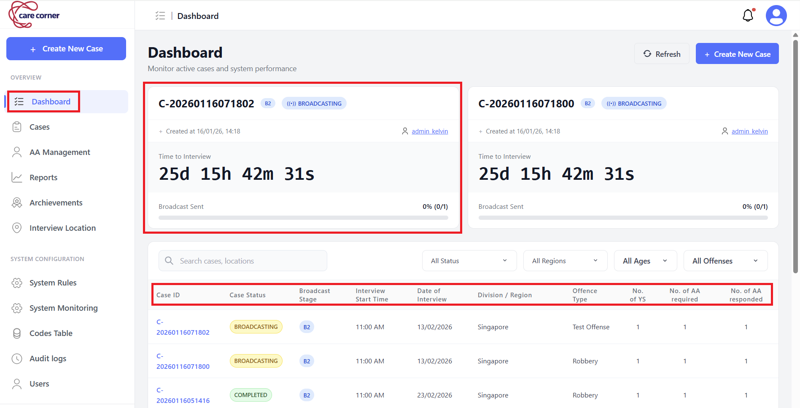

📊 Monitor Broadcast
This guide will walk you through monitoring a broadcast in CAS.
Overview
This page explains how to monitor and manage a case after it is created (especially during broadcast). It covers dashboard monitoring, viewing case details and tabs (Documentations/Assignment Method/Audit Logs), role-based access (who can view/edit documentation and payable status), and operational actions such as manual assignment, editing (when allowed), cancelling, and completion rules.
Dashboard & Monitoring
You can monitor cases either from:
- Dashboard (operational view for multiple cases), or
- Cases → Case Details (deep-dive into a specific case)
What You Can See on the Dashboard
Typical dashboard information includes:
- Case ID (format: YY-nnnn)
- Status (Draft, Broadcasting, Pending Confirmation, Assigned, Completed, Cancelled)
- Broadcast stage
- Location
- Interview Schedule
- Number of Youth, AA required and AA responded
Live Broadcast Monitoring (Operational View)
In a typical dashboard view, you will see multiple cases listed as cards. Each case card may include a countdown timer for Time to Interview, so staff can quickly prioritize urgent cases.

View Case Details
Step 1: Navigate to Cases
In the left-hand side menu, navigate to Cases
Step 2: Select Case
Choose the specific case you want to monitor from the list

Step 3: View Details Tab
In the Details tab, you can see the Case ID, current Status, Youth Information (name, age, gender), Interview Details (date, time, location), IO Information, and any Special Requirements.

Step 4: View Documentations Tab
View AA documentation after they submit it:
- Photos uploaded by AA
- Timestamps
- Notes/remarks
Role-based access (Documentations Tab):
- Call Centre Staff: Can only see Timestamp (cannot view submitted documentation content and cannot see Payable status)
- AAYS Manager / System Administrator: Can view all details and can Edit Documentation and Payable Status

How to Edit Documentation (Manager/Admin):
- Select the documentation entry you want to update
- Edit fields as needed:
- Timestamp
- Remarks
- Photos (add/remove/replace)
- Payable status (toggle on/off)
- Click Save Changes to apply updates

Step 5: View Assignment Method Tab
View assignment details including Assignment Type (Broadcast / Manual / Data Entry), current Status, and AA Response Log showing history of responses.

View Audit Logs Tab
View case history edited by the user, and what was changed, and when each action occurred.
Note: Audit Logs access requires AAYS Manager (case-related) or System Administrator role.
Case Cancellation
Cancellation Rules
- During Broadcast → Broadcast stops, all pending notifications cleared
- AA Already Assigned → AA receives cancellation notification and has 30 minutes to acknowledge:
- Case status is Cancelling if the AA has acknowledged but has not submitted documentation yet
- Case status automatically changes to Cancelled when the AA submits documentation, or after 30 minutes if the AA does not acknowledge and does not submit documentation
Who Can Cancel
- Call Centre Staff
- AAYS Manager
- System Administrator
Note: Cancelled cases cannot be restored. If needed, create a new case.
How to Cancel
Step 1: Navigate to the case you want to cancel -> Click Cancel button

Step 2: Select a Cancellation Reason and add Remarks if needed

Step 3: Click Confirm Cancel
Case Completion
Important: For cases with multiple AAs and multiple youths:
- Case status changes to Completed only when ALL assigned AAs have submitted their documentation
- Each AA must submit documentation for their assigned youth(s)
- You can track individual AA submission status in the Documentations Tab
Edit Case
You can only edit a case when:
- Broadcast is stopped (status = Draft)
- No AA has been assigned yet
How to Stop Broadcast / Assignment (Quick steps)
If the case is Broadcasting and no AA has been assigned yet:
Step 1: Navigate to the case you want to stop -> Click Stop button

Step 2: Click Stop Assignment to confirm stopping

Step 3: Click Edit

Step 4: Update case details as needed (e.g., interview schedule, location, requirements)

Step 5: If needed, switch Assignment Method (Broadcast ↔ Manual Assignment)

Step 6: Click Save to apply changes on case details or Confirm Assignment to apply changes on assignment method
Step 7: Click Start Assignment to re-broadcast this case or to do manual assignment
Note: You cannot switch a broadcasting case to Data Entry Only. Data Entry is used only when the interview is already completed offline and you are recording the case for reporting purposes.
🎥 Video Tutorial
Follow this short video to see how to initiate case cancellation via web portal, how AA acknowledge cancellation case and edit case while broadcasting.